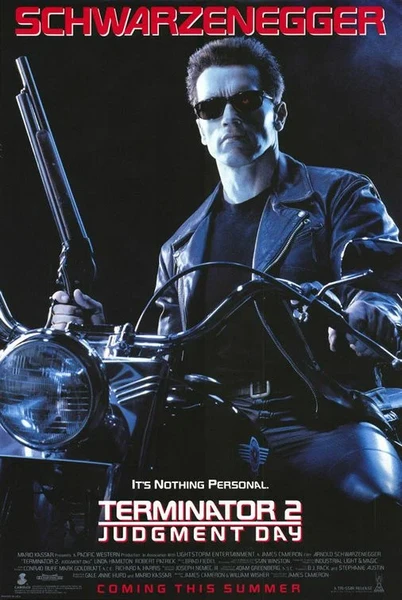

Выбор автора
1991
ИИ, Фантастика
Спустя десять лет после первого вторжения «Скайнет» отправляет в 1995 год жидкометаллического Терминатора, чтобы убить подростка Джона Коннора. Сопротивление отвечает тем же самым Т-800, перепрограммированным для защиты. Это кино о переменах: убийца становится наставником, машина постигает ценность жизни, а «Судный день» оказывается сценарием, который можно переписать. Сиквел, задавший эталон, — и, пожалуй, самый изящный довод в пользу того, что искусственного интеллекта не обязательно бояться: его можно направить в иное русло.
Описание на английском
A decade after the first invasion, Skynet sends a liquid-metal Terminator to 1995 to kill teenage John Connor. The resistance answers with the same T-800, reprogrammed to protect. This is cinema about a shift: the killer becomes a mentor, the machine discovers why life matters, and 'Judgment Day' turns out to be a script that can be rewritten. A sequel that set the standard — and perhaps the most elegant argument that artificial intelligence can be not only feared, but steered in another direction.